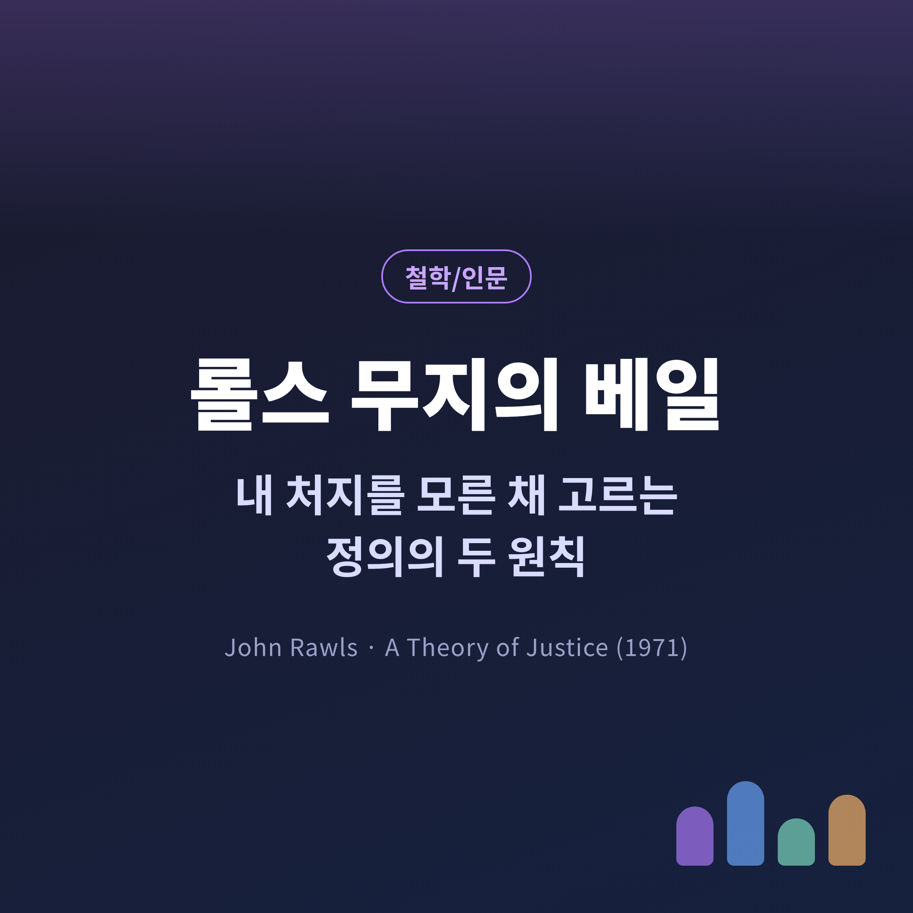
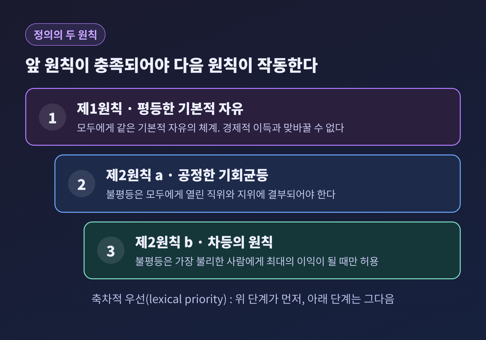
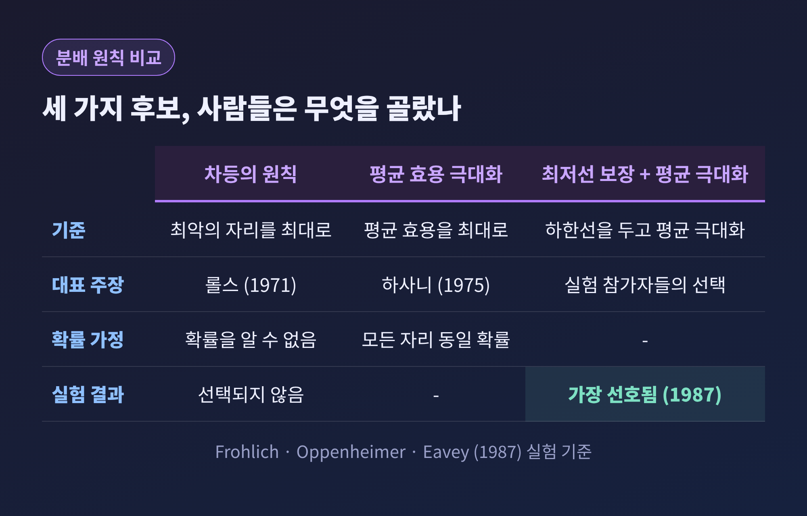
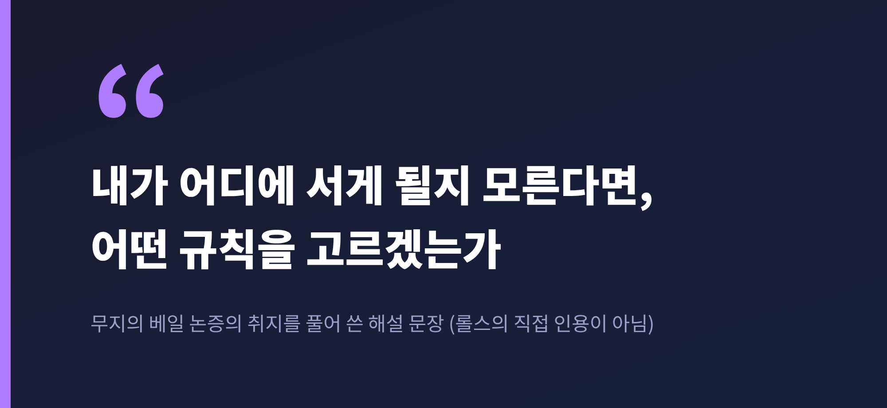

오늘은 존 롤스의 '무지의 베일'과 '정의의 두 원칙'에 대해 이야기해 보려 합니다. 내가 어떤 처지로 태어날지 모른 채 사회의 규칙을 정한다면 무엇을 고르게 되는지, 롤스가 왜 그 답을 두 원칙으로 정리했는지, 그리고 그 답에 어떤 반론이 따랐는지를 차례로 살펴보겠습니다.
먼저 결론을 세 줄로 적겠습니다.
존 롤스는 1921년 미국 볼티모어에서 태어나 2002년 81세로 세상을 떠난 철학자입니다. 1962년부터 하버드에서 가르쳤고, 1971년에 『정의론』을 펴냈습니다. 560쪽에 이르는 이 책은 1999년 개정판으로 다시 나왔습니다. 브리태니커는 그를 20세기 가장 중요한 정치철학자로 꼽습니다.
『정의론』의 주된 상대는 공리주의였습니다. 전체의 행복 총량만 크다면 일부의 희생도 정당할 수 있다는 생각에 맞서, 롤스는 사회계약의 전통을 다시 불러왔습니다. 논의의 대상은 개인의 미덕이 아니라 '사회의 기본 구조'입니다. 헌법, 시장, 재산 제도, 가족처럼 우리 삶의 출발선을 정하는 틀을 말합니다.
문제는 공정한 규칙을 누가, 어떻게 정하느냐입니다. 부자는 부자에게 유리한 규칙을 원하고, 힘센 사람은 힘센 사람에게 유리한 규칙을 원합니다. 롤스의 해법은 단순했습니다. 규칙을 고르는 사람이 자기 처지를 아예 모르게 만들자는 것입니다.
이 사고실험을 '원초적 입장'이라고 부릅니다. 자유롭고 평등한 시민의 대표자들이 모여 사회의 기본 구조에 적용할 원칙을 고르는 가상의 자리입니다. 역사 속에서 실제로 있었던 모임이 아니라, 우리가 어떤 원칙에 동의할지를 따져 보기 위한 장치입니다.
스탠퍼드 철학 백과사전에 따르면 당사자는 인종, 민족, 성별, 나이, 소득, 재산, 타고난 재능, 그리고 자신의 종교나 세계관을 모릅니다. 사회의 정치체제나 발전 수준도 모릅니다. 반대로 사람들의 신념이 서로 다르다는 사실, 자원이 적당히 부족하다는 사실, 경제학과 심리학 같은 일반 지식은 압니다. 또 누구나 자유, 기회, 소득과 부, 자존감의 사회적 기반 같은 '기본재'를 더 많이 원한다는 것도 압니다.
당사자의 태도도 중요합니다. 이들은 서로에게 무관심하되 질투하지 않습니다. 이타적이지도, 노골적으로 이기적이지도 않고, 자신이 대표하는 사람의 수탁자처럼 움직입니다. 베일이 걷힌 뒤에는 합의를 고칠 수 없다는 조건도 붙습니다. 그래서 선택은 신중해질 수밖에 없습니다.
롤스가 이 자리에서 고른다고 본 원칙은 두 가지입니다.
제1원칙은 평등한 기본적 자유입니다. 각자는 모두에게 똑같이 주어지는 기본적 자유의 체계에 대해 동등한 권리를 가집니다. 1971년 원문은 "가장 광범위한 체계"라고 썼는데, 1982년에 "충분히 적절한 체계"로 표현을 고쳤습니다.
제2원칙은 사회·경제적 불평등의 조건입니다. 불평등은 두 가지를 갖출 때에만 허용됩니다.

여기서 눈여겨볼 대목은 순서입니다. 원칙들은 사전에서 단어를 찾듯 차례로 적용됩니다. 『정의론』 최종 정식의 순서는 평등한 자유, 공정한 기회균등, 차등의 원칙입니다. 롤스는 앞선 원칙이 충족되기 전에는 뒤의 원칙이 작동하지 않는다고 썼습니다. 이를 축차적 우선, 영어로 lexical priority라고 합니다.
이 순서가 말하는 바는 분명합니다. 경제적 이득을 위해 기본적 자유를 팔 수 없다는 것입니다. 사회 전체가 더 부유해진다는 이유로 누군가의 자유를 줄이는 거래는 허용되지 않습니다. 또 차등의 원칙은 효율이나 총이익의 극대화보다 위에 놓입니다. 불평등 자체를 금하는 것이 아니라, 그 불평등이 가장 불리한 사람에게도 득이 되는지를 묻는 원칙입니다.
내 처지를 모른다면 가장 나쁜 자리에 놓일 가능성도 있습니다. 롤스는 여기서 '맥시민'을 끌어옵니다. 각 선택지의 최악의 결과를 비교해, 최악이 그나마 가장 나은 쪽을 고르는 규칙입니다.
이 규칙이 합리적인 이유로 롤스는 세 조건을 듭니다. 첫째, 각 자리에 놓일 확률을 믿을 만하게 추정할 수 없습니다. 둘째, 맥시민으로 보장되는 최저선이 받아들일 만합니다. 셋째, 다른 대안의 최악은 도저히 용납할 수 없습니다. 게다가 이 선택은 중대하고 되돌릴 수 없으며, 내 모든 장래를 좌우합니다. 공리의 원칙은 그 최저선을 보장하지 못하지만, 정의의 두 원칙은 보장합니다.
다만 롤스는 당사자가 천성적으로 겁이 많다고 주장하지 않았습니다. 사안이 무거우니 '마치' 위험을 피하는 사람처럼 고르는 것이 합리적이라는 뜻입니다. 훗날에는 맥시민을 "유용한 경험칙" 정도로 물렸고, 원초적 입장 자체를 '표상 장치'라고 설명했습니다.
가장 날카로운 반론은 존 하사니에게서 나왔습니다. 하사니는 1975년, 완전히 불확실한 상황이라면 모든 사회적 위치에 같은 확률을 매겨야 한다고 주장했습니다. 그렇게 계산하면 사람들은 최악의 자리를 보호하는 원칙이 아니라 평균 효용을 가장 높이는 원칙을 고르게 됩니다. 그는 원초적 입장의 조건이 롤스가 원하는 결론이 나오도록 짜였다고도 비판했습니다. 흥미롭게도 하사니는 이 장치를 처음 수학적으로 다듬은 사람이었고, 그 결론은 사회계약이 아니라 공리주의였습니다.
그렇다면 실제 사람들은 무엇을 고를까요. 프롤리히, 오펜하이머, 에이비가 1987년에 이 사고실험을 실험실로 옮겼습니다. 참가자들은 무지의 베일 아래에서 만장일치 합의에 도달했습니다. 그러나 차등의 원칙을 고르지는 않았습니다. 가장 선호된 것은 '최저 소득 보장선을 둔 평균 소득 극대화'였습니다.

위키백과가 정리한 같은 계열의 연구에서는 맥시민을 최선으로 꼽은 참가자가 5% 미만이었다고 전합니다. 이 수치는 한 곳에서만 확인되므로 참고용으로만 보시길 권합니다. 두 자료가 공통으로 말하는 바는 분명합니다. 사람들은 최악의 자리를 지키되, 사회 전체의 몫도 포기하지 않는 절충을 택했다는 점입니다.
예전에는 롤스의 결론이 곧 베일 뒤의 합리적 선택으로 여겨졌습니다. 지금은 그 결론이 유일한 답이 아닐 수 있다는 점이 실험으로도 드러난 셈입니다.
반론은 한 방향으로만 오지 않았습니다.

롤스 자신도 물러서지 않고 이론을 다듬었습니다. 『정치적 자유주의』(1993)와 『공정으로서의 정의: 재서술』(2001)에서 논의를 고쳤고, 『만민법』(1999)에서는 같은 장치를 나라 사이의 관계로 넓혔습니다. 1999년에는 미국 국가인문학훈장도 받았습니다.
정리하면 이렇습니다. 무지의 베일은 정답을 알려 주는 공식이 아니라, 내 이해관계를 잠시 내려놓고 규칙을 바라보게 하는 도구입니다. 두 원칙이 옳은지는 지금도 갈립니다. 하사니는 평균을, 노직은 자유 시장을, 센은 역량을 말합니다. 그래도 어느 쪽 비판이든 롤스가 던진 질문 안에서 이루어진다는 점은 흥미롭습니다.
그 질문을 일상으로 가져오면 이렇게 됩니다. 어떤 제도나 규칙을 볼 때, 내가 그 안에서 가장 불리한 자리에 태어난다면 이 규칙을 받아들일 수 있는가. 이 한 가지를 스스로 물어보는 것만으로도 판단이 달라질 수 있습니다.
결국 남는 것은 하나입니다. "내가 어디에 서게 될지 모른다면, 어떤 사회를 고르겠는가." 이 물음에 정직하게 답해 보려는 시도가 곧 정의에 대한 생각의 시작이라고 생각합니다.